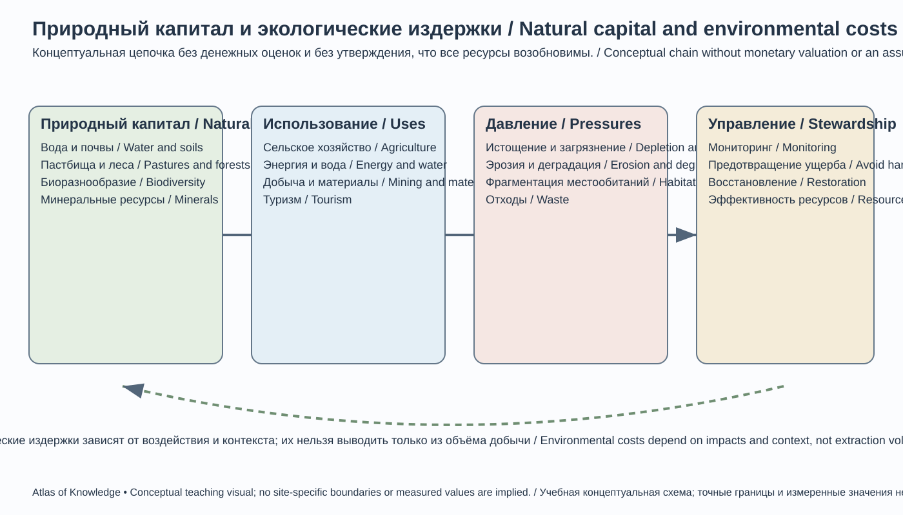

Глава 25. Города, экономика, транспорт и природные ресурсы Кыргызстана
Chapter 25. Cities, Economy, Transport and Natural Resources of Kyrgyzstan
Актуальность данных / Data currency. Оперативные макроэкономические показатели приведены за январь–сентябрь 2026 года по предварительной оценке НСК. Структурные и отраслевые сведения основаны на последних доступных официальных публикациях, государственных программах и материалах международных организаций. Оперативные темпы роста не следует трактовать как окончательные годовые результаты.
25.1. Кыргызстан как пространственная экономическая системаKyrgyzstan as a Spatial Economic System
Экономическая география Кыргызстана определяется сочетанием горного рельефа, долинных зон расселения, водных ресурсов, транспортных коридоров и положения между крупными рынками Центральной Азии и Китая. Экономическая деятельность распределена неравномерно: население, предприятия и инфраструктура концентрируются в Чуйской и Ферганской долинах, вокруг крупных городов и вдоль основных автомобильных маршрутов. Высокогорные районы выполняют важные функции водосбора, пастбищного хозяйства, гидроэнергетики и природного туризма.
Горная география одновременно создаёт возможности и ограничения. Реки обеспечивают гидроэнергетический потенциал и орошение; пастбища поддерживают животноводство; горные ландшафты формируют туристическую привлекательность. Вместе с тем расстояния по прямой часто недооценивают реальные транспортные затраты: перевалы, ущелья, сезонные снегопады, сели и оползни увеличивают время и стоимость перевозок.
Для анализа национальной экономики важно различать: - место производства — территорию, где создана добавленная стоимость; - место регистрации предприятия — адрес юридического лица, который не всегда совпадает с местом фактической деятельности; - место проживания работников — может находиться в другом районе или области; - место потребления — рынок, где товары и услуги используются; - транзитный поток — перевозку через территорию страны без обязательного создания сопоставимой местной добавленной стоимости.
Поэтому географический анализ не должен ограничиваться перечнем предприятий или объёмом грузов: необходимо учитывать занятость, производительность, локальные цепочки поставок, экологические издержки и доступность услуг.
Kyrgyzstan's economic geography is shaped by its mountainous relief, valley settlement patterns, water resources, transport corridors and position between major markets in Central Asia and China. Economic activity is unevenly distributed: population, businesses and infrastructure are concentrated in the Chuy and Fergana valleys, around major cities and along principal roads. High mountain areas perform important functions as watersheds, pastures, hydropower zones and destinations for nature-based tourism.
Mountain geography creates both opportunities and constraints. Rivers support hydropower and irrigation; pastures sustain livestock; and mountain landscapes attract visitors. At the same time, straight-line distance often understates real transport costs: mountain passes, gorges, seasonal snowfall, debris flows and landslides increase travel time and freight costs.
A spatial analysis of the national economy should distinguish: - place of production — where value added is created; - place of business registration — the legal address, which may differ from the location of actual operations; - workers' place of residence — which may be in another district or oblast; - place of consumption — the market where goods and services are used; and - transit flow — goods transported through the country without necessarily creating comparable domestic value added.
Economic geography should therefore go beyond lists of enterprises and freight volumes. It should also examine employment, productivity, local supply chains, environmental costs and access to services.
25.2. Макроэкономическая структура и динамикаMacroeconomic Structure and Trends
По предварительной оценке НСК, валовой внутренний продукт Кыргызстана в январе–сентябре 2026 года составил 1 640,9 млрд сомов, увеличившись в реальном выражении на 10,8% к соответствующему периоду 2025 года. В структуре ВВП доля услуг составила 48,7%, отраслей, производящих товары, — 35,9%, чистых налогов на продукты — 15,4%. Вклад строительства заметно вырос; доля промышленности составила 18,4%, сельского хозяйства, лесного хозяйства и рыболовства — 8,4%.
| Сектор | Доля в ВВП, январь–сентябрь 2026 | Реальный индекс к январю–сентябрю 2025 |
|---|---|---|
| Сельское, лесное хозяйство и рыболовство | 8,4% | 106,5% |
| Промышленность | 18,4% | 107,1% |
| Строительство | 9,1% | 162,2% |
| Услуги | 48,7% | 106,1% |
| Чистые налоги на продукты | 15,4% | 110,8% |
*Источник: НСК, предварительная оценка за январь–сентябрь 2026 года. Индекс 106,5% означает рост на 6,5%, а не долю сектора в ВВП. Доли округлены. НСК подчёркивает, что оперативная оценка ВВП рассчитывается для своевременного отражения тенденций и опирается на динамику индексов выпуска по базовым видам деятельности; это предварительная оценка, а не окончательный расчёт годовых национальных счетов. Поэтому показатели за январь–сентябрь следует сравнивать с тем же периодом предыдущего года и не переносить автоматически на весь 2026 год.
Быстрый рост агрегированного ВВП сам по себе не показывает, насколько равномерно распределяются доходы и производственные возможности. Для полноценной оценки следует изучать ВВП на душу населения, производительность труда, реальные доходы, занятость, инвестиции, экспортную структуру, региональные различия и долговую устойчивость.
Международные оценки также подчёркивают необходимость различать краткосрочные факторы роста и долгосрочную производительность. МВФ в консультации 2026 года отмечал значительную роль торговли, строительства, капитальных потоков и внутреннего спроса в динамике последних лет, а также риски перегрева и нормализации временных драйверов. Поэтому долгосрочная конкурентоспособность требует развития человеческого капитала, институтов, экспорта с высокой добавленной стоимостью и устойчивой инфраструктуры.
Национальные направления развития
План действий Кабинета Министров на 2026 год по реализации Национальной программы развития до 2030 года выделяет четыре вектора: индустриализацию, превращение страны в региональный хаб, развитие сельского хозяйства и туризма, а также зелёную энергетику. В государственных целях фигурируют расширение промышленного выпуска, агропереработки, транзитных перевозок и энергетики. Это программные ориентиры; фактический прогресс следует оценивать по ежегодным показателям и независимым данным.
According to the National Statistical Committee's preliminary estimate, Kyrgyzstan's gross domestic product (GDP) reached KGS 1,640.9 billion in January–September 2026, a real increase of 10.8% compared with the same period of 2025. Services accounted for 48.7% of GDP, goods-producing industries for 35.9%, and net taxes on products for 15.4%. Construction expanded particularly rapidly; industry accounted for 18.4% and agriculture, forestry and fishing for 8.4%.
| Sector | Share of GDP, Jan–Sep 2026 | Real index, Jan–Sep 2025 = 100 |
|---|---|---|
| Agriculture, forestry and fishing | 8.4% | 106.5 |
| Industry | 18.4% | 107.1 |
| Construction | 9.1% | 162.2 |
| Services | 48.7% | 106.1 |
| Net taxes on products | 15.4% | 110.8 |
*Source: NSC preliminary estimate for January–September 2026. An index of 106.5 means growth of 6.5%, not a 106.5% GDP share. Shares are rounded. The NSC notes that its rapid GDP estimate is designed to track current trends and is based on output indices in basic economic activities; it is a preliminary estimate, not the final annual national-accounts calculation. January–September figures should therefore be compared with the same period of the previous year and must not automatically be extrapolated to the whole of 2026.
Rapid aggregate GDP growth does not show whether income and productive opportunities are distributed evenly. A fuller assessment should examine GDP per capita, labour productivity, real incomes, employment, investment, export composition, regional differences and debt sustainability.
International assessments also distinguish short-term growth drivers from long-term productivity. In its 2026 consultation, the IMF highlighted the role of trade, construction, capital flows and domestic demand in recent growth, while noting overheating risks and the possible normalisation of temporary drivers. Long-term competitiveness therefore depends on human capital, institutions, higher-value exports and resilient infrastructure.
National development priorities
The Cabinet of Ministers' 2026 action plan for implementing the National Development Programme to 2030 identifies four directions: industrialisation, development of the country as a regional hub, agriculture and tourism, and green energy. These are policy objectives, not proof of achieved results. Progress should be assessed using annual indicators and independent data.
25.3. Городская система КыргызстанаThe Urban System of Kyrgyzstan
Города Кыргызстана различаются по масштабу, функциям, историческому происхождению и положению в транспортной сети. Бишкек и Ош — крупнейшие города республиканского значения. Другие города выполняют областные, районные, промышленные, транспортные, туристические и приграничные функции.
Бишкек — столица и крупнейший центр услуг
Бишкек расположен в Чуйской долине у северного подножия Кыргызского Ала-Тоо. Его функции включают государственное управление, образование, здравоохранение, финансы, торговлю, деловые услуги, культуру, логистику и промышленное производство. Город связан с международными автомобильными и авиационными маршрутами и образует крупнейший рынок труда страны.
Столичная агломерация выходит за пределы административной территории города. Пригородные поселения Чуйской области включены в ежедневные трудовые, образовательные и торговые потоки. Это создаёт необходимость согласованного планирования землепользования, общественного транспорта, инженерных сетей, водоснабжения, канализации и защиты сельскохозяйственных земель.
Ключевые городские вызовы: - загрязнение воздуха, связанное с отоплением, транспортом, пылью и сезонными метеорологическими условиями; - перегруженность улиц и недостаточная связность общественного транспорта; - неравномерное развитие инженерной инфраструктуры в новых районах; - дефицит качественных общественных пространств и зелёных зон; - нагрузка на водоснабжение и системы очистки сточных вод; - необходимость сейсмостойкого строительства и контроля застройки.
Перспективы — развитие общественного транспорта, компактной и смешанной застройки, энергоэффективных зданий, зелёной инфраструктуры, цифровых и профессиональных услуг, университетских и технологических кластеров.
Ош — южный городской и торговый узел
Ош расположен в Ферганской долине и является важнейшим центром юга Кыргызстана. Его положение связывает город с Ошской, Баткенской и Джалал-Абадской областями, а также с Узбекистаном, Таджикистаном и направлениями к высокогорным районам Памиро-Алая.
Экономические функции города включают торговлю, транспорт, образование, медицину, услуги, переработку и рынки сельскохозяйственной продукции. Кара-Суу и другие близлежащие торговые узлы формируют более широкую систему южной логистики. Сулейман-Тоо — объект Всемирного наследия ЮНЕСКО в городской черте — имеет культурное, образовательное и туристическое значение.
Главные задачи городской политики — управление ростом застройки, развитие общественного транспорта, снижение пылевого и транспортного загрязнения, улучшение канализации и водоснабжения, повышение устойчивости к сейсмическим и гидрологическим рискам.
Каракол — административный, образовательный и туристический центр Иссык-Куля
Каракол расположен в восточной части Иссык-Кульской котловины, у подножия Тескей-Ала-Тоо. Город обслуживает сельское хозяйство, торговлю, образование, медицину и туризм. Он является отправной точкой к горным маршрутам, ущельям и природным территориям восточного Иссык-Куля.
Туристическая экономика должна быть круглогодичной и экологически ответственной. Для этого важны канализация, очистка стоков, управление отходами, безопасность горных маршрутов, общественный транспорт и подготовка местных кадров.
Джалал-Абадская городская система: Манас и промышленные центры
Современное название бывшего города Джалал-Абад — Манас (переименование в 2025 году). Он является административным центром Джалал-Абадской области. В регионе также важны промышленные и энергетические города Кара-Куль, Таш-Кумыр, Майлуу-Суу, Кочкор-Ата и другие центры. Их экономическая траектория связана с энергетикой, промышленным наследием, сельским хозяйством и услугами.
Для городов с наследием добывающей и энергетической промышленности важны экологическая реабилитация площадок, безопасное хранение отходов, диверсификация занятости и модернизация коммунальной инфраструктуры.
Нарын — центр высокогорного региона
Нарын расположен в долине одноимённой реки и выполняет административные, образовательные, торговые и транспортные функции. Город обслуживает высокогорные районы и маршруты к Ат-Башы, Торугарту, Сон-Кулю и Таш-Рабату. Экономические ограничения связаны с суровым климатом, удалённостью рынков и высокой стоимостью инфраструктуры.
Потенциал города — в логистике, переработке животноводческой продукции, образовательных услугах, возобновляемой энергетике и устойчивом горном туризме.
Талас — центр компактной межгорной долины
Талас обслуживает сельскохозяйственную экономику области, торговлю, образование и административные функции. Его развитие зависит от качества дорожного сообщения с Чуйской долиной и приграничных связей с Казахстаном. Возможности связаны с хранением и переработкой сельхозпродукции, сервисами для фермеров и региональным туризмом.
Баткен, Кызыл-Кия, Сулюкта и Кадамжай
Городская система Баткенской области имеет выраженные приграничные, промышленные и сельскохозяйственные функции. Баткен — административный центр; Кызыл-Кия и Сулюкта исторически связаны с угледобычей и промышленностью; Кадамжай — с горнодобывающим наследием и переработкой. Современное развитие требует диверсификации, экологической безопасности промышленных объектов, транспортной связности и устойчивых трансграничных механизмов.
Другие значимые города и центры
Балыкчы — транспортные ворота западного Иссык-Куля; Чолпон-Ата — туристический центр северного побережья; Кара-Балта — промышленный и транспортный узел Чуйской долины; Токмок — исторический, торговый и производственный центр; Кант — промышленный и пригородный узел; Токтогул — центр района, связанного с гидроэнергетикой и водохранилищем. Их функции следует анализировать в региональном контексте, а не только по численности населения.
Kyrgyzstan's cities differ in size, functions, historical origins and position within the transport network. Bishkek and Osh are the two largest cities of republican significance. Other urban centres perform oblast, district, industrial, transport, tourism and border-related functions.
Bishkek — capital and largest service centre. Bishkek lies in the Chuy Valley at the northern foot of the Kyrgyz Ala-Too. It concentrates public administration, education, healthcare, finance, trade, business services, culture, logistics and industry. Its functional urban area extends beyond the city boundary: settlements in Chuy Oblast are linked to the capital through daily commuting, education and trade. This requires coordinated land-use planning, public transport, utilities, water supply, sewerage and protection of agricultural land. Major challenges include air pollution, traffic congestion, uneven infrastructure in new districts, limited quality public space, pressure on water and wastewater systems, and the need for earthquake-resistant construction.
Osh — southern urban and trade hub. Located in the Fergana Valley, Osh is a key centre for southern Kyrgyzstan and connects the oblasts of Osh, Batken and Jalal-Abad with Uzbekistan, Tajikistan and routes towards the high Pamir–Alay. Its functions include trade, transport, education, healthcare, services, processing and agricultural markets. Nearby Kara-Suu is part of the wider southern logistics system. The UNESCO World Heritage property of Sulayman-Too is an important cultural and tourism asset. Urban priorities include managing growth, improving public transport, reducing dust and traffic pollution, upgrading water and sewerage services, and reducing seismic and hydrological risks.
Karakol — administrative, educational and tourism centre of Issyk-Kul. Karakol is located in the eastern Issyk-Kul Basin at the foot of the Terskey Ala-Too. It serves agriculture, trade, education, healthcare and tourism, and provides access to mountain routes and protected landscapes. A sustainable year-round visitor economy requires wastewater treatment, waste management, safe trails, public transport and trained local workers.
The Jalal-Abad urban system: Manas and industrial centres. The former city of Jalal-Abad was renamed Manas in 2025 and is the administrative centre of Jalal-Abad Oblast. Other important centres include Kara-Kul, Tash-Kumyr, Mailuu-Suu and Kochkor-Ata. Their economic trajectories are connected with energy, industrial legacies, agriculture and services. Priorities include environmental rehabilitation, safe waste storage, employment diversification and modern municipal infrastructure.
Naryn — centre of a high-mountain region. Naryn lies in the valley of the river of the same name and performs administrative, educational, trade and transport functions. It serves high mountain districts and routes towards At-Bashy, Torugart, Song-Kul and Tash-Rabat. Its economy faces constraints from a severe climate, distance from markets and high infrastructure costs. Opportunities include logistics, livestock processing, education, renewable energy and sustainable mountain tourism.
Talas — centre of a compact intermontane valley. Talas serves the oblast's agricultural economy, trade, education and administration. Its development depends on road connections with the Chuy Valley and cross-border links with Kazakhstan. Opportunities include storage and processing of agricultural products, services for farmers and regional tourism.
Batken, Kyzyl-Kiya, Sulukta and Kadamjay. The urban system of Batken Oblast has strong border, industrial and agricultural functions. Batken is the administrative centre; Kyzyl-Kiya and Sulukta have historic links with coal mining and industry; Kadamjay is associated with mining and processing. Development requires economic diversification, environmental safety at industrial sites, transport connectivity and reliable cross-border arrangements.
Other important towns. Balykchy is the western gateway to Issyk-Kul; Cholpon-Ata is a tourism centre on the northern shore; Kara-Balta is an industrial and transport hub in the Chuy Valley; Tokmok is a historic, trade and production centre; Kant is an industrial and suburban node; and Toktogul serves a district associated with hydropower and the reservoir. Their functions should be analysed in regional context, not by population size alone.
25.4. Экономические отрасли и территориальная организацияEconomic Sectors and Their Spatial Organization
Сельское хозяйство и агропромышленная цепочка
Сельское хозяйство зависит от высоты, температуры, осадков, почв, орошения и доступности рынков. В долинах развиваются зерновые, овощные, плодовые, технические и кормовые культуры; в высокогорных районах преобладают пастбищное животноводство и ограниченное земледелие.
Основные географические системы: - Чуйская долина — интенсивное земледелие, сахарная свёкла, зерновые, овощи, молочное животноводство; - Таласская долина — фасоль, зерновые, кормовые культуры и животноводство; - Иссык-Кульская котловина — картофель, зерновые, овощи, садоводство и животноводство; - Ферганские предгорья — овощеводство, садоводство, отдельные технические культуры и животноводство; - Нарын и высокогорные долины — овцеводство, коневодство, мясное и молочное животноводство, пастбищные системы.
Экономическая отдача сельского хозяйства определяется не только урожаем. Важны семена, ветеринария, хранение, холодильные цепи, переработка, стандарты качества, упаковка, сертификация, кооперация и доступ к рынкам. Потери после сбора урожая могут существенно снижать доходы фермеров.
Промышленность и переработка
Промышленная география включает добывающие отрасли, металлургию, пищевую промышленность, производство строительных материалов, лёгкую промышленность, энергетику и ремонтно-сервисные производства. Предприятия тяготеют к городам, источникам сырья, электроэнергии, трудовым ресурсам, дорогам и рынкам.
Для анализа промышленности следует различать: - добычу сырья; - первичное обогащение и переработку; - производство готовых изделий; - ремонт и промышленный сервис; - экологические обязательства на протяжении жизненного цикла объекта.
Развитие промышленности не должно оцениваться только по валовому выпуску. Необходимы показатели производительности, локальной добавленной стоимости, занятости, энергоёмкости, водопотребления, выбросов и обращения с отходами.
Малый и средний бизнес
Малые и средние предприятия обеспечивают значительную часть занятости и услуг: торговлю, ремонт, общественное питание, транспорт, строительство, гостиницы, переработку и цифровые сервисы. Их территориальное распределение зависит от размера рынка, доступа к финансированию, дорог, интернета, электроэнергии и административных процедур.
Для укрепления МСП важны предсказуемые правила, доступ к кредитованию, профессиональное образование, цифровые платежи, экспортная сертификация, деловые ассоциации и муниципальная инфраструктура.
Туризм и рекреационная экономика
Туристические ресурсы включают Иссык-Куль, горные маршруты Тянь-Шаня и Памиро-Алая, культурные памятники, кочевое наследие, археологические объекты, природные парки и лечебно-рекреационные территории.
Основные направления: - пляжный и семейный отдых; - треккинг и альпинизм; - лыжный и зимний туризм; - конные маршруты и джайлоо-туризм; - культурно-исторические поездки; - наблюдение за птицами и природой; - гастрономический и сельский туризм.
Устойчивость туризма определяется управлением нагрузкой на экосистемы, очисткой стоков, безопасностью маршрутов, подготовкой гидов, доступностью медицинской помощи, сезонностью занятости и долей доходов, остающейся в местных сообществах.
Цифровая экономика и услуги
Бишкек и Ош концентрируют значительную часть образовательных, финансовых, медицинских и деловых услуг. Цифровые платформы позволяют предоставлять услуги за пределами крупных городов, однако для этого необходимы стабильный интернет, цифровая грамотность, защита данных, платёжная инфраструктура и квалифицированные кадры.
Высокотехнологичные услуги не требуют такого же пространственного размещения, как тяжёлая промышленность, но зависят от качества образования, правовой среды, электроэнергии и доступа к международным рынкам.
Agriculture and agri-food chains. Agriculture depends on elevation, temperature, precipitation, soils, irrigation and market access. Valley areas support cereals, vegetables, fruit, industrial and fodder crops, while high mountain areas are more strongly associated with pasture-based livestock and limited cultivation. The Chuy Valley is known for intensive farming, sugar beet, cereals, vegetables and dairy production; the Talas Valley for beans, cereals, fodder crops and livestock; the Issyk-Kul Basin for potatoes, cereals, vegetables, orchards and livestock; the Fergana foothills for horticulture and livestock; and Naryn and other high valleys for sheep, horses, meat and dairy production. Agricultural returns depend not only on harvest volumes but also on seeds, veterinary services, storage, cold chains, processing, quality standards, packaging, certification, cooperation and market access. Post-harvest losses can substantially reduce farm income.
Industry and processing. Industrial geography includes mining, metallurgy, food processing, construction materials, light manufacturing, energy and repair services. Enterprises tend to locate near cities, raw materials, electricity, labour, roads and markets. Analysis should distinguish extraction, primary beneficiation and processing, finished-goods manufacturing, industrial services, and environmental liabilities throughout a facility's life cycle. Output alone is insufficient: productivity, domestic value added, employment, energy and water intensity, emissions and waste management also matter.
Small and medium-sized enterprises. SMEs provide a substantial share of jobs and services in trade, repair, food services, transport, construction, hospitality, processing and digital business. Their location depends on market size, finance, roads, internet access, electricity and administrative procedures. Predictable rules, credit, vocational education, digital payments, export certification, business associations and municipal infrastructure can strengthen this sector.
Tourism and recreation. Tourism assets include Issyk-Kul, mountain routes of the Tien Shan and Pamir–Alay, cultural monuments, nomadic heritage, archaeological sites, nature parks and health resorts. Activities range from beach holidays and family tourism to trekking, mountaineering, skiing, horse riding, jailoo tourism, cultural travel, birdwatching, gastronomy and rural tourism. Sustainability depends on ecosystem carrying capacity, wastewater treatment, trail safety, trained guides, medical access, seasonality and the share of income retained by local communities.
Digital economy and services. Bishkek and Osh concentrate many education, financial, medical and business services. Digital platforms can extend services beyond major cities, but require reliable internet, digital literacy, data protection, payment infrastructure and skilled workers. High-tech services do not need the same location pattern as heavy industry, but depend on education, the rule of law, reliable electricity and access to international markets.
25.5. Транспортная географияTransport Geography
Транспортная система Кыргызстана опирается прежде всего на автомобильные перевозки: горный рельеф и рассредоточенность поселений делают дороги основой внутренней связности. По публикации Национального статистического комитета от 25 октября 2026 года, в 2025 году автомобильным транспортом было перевезено более 62 млн тонн грузов — свыше 80% общего объёма грузоперевозок; на автобусы и такси приходилось более 90% пассажирских перевозок. Эти доли относятся к статистическому учёту перевозок за 2025 год и не должны автоматически смешиваться с более высокими долями (до 96% грузов и 98% пассажиров), приводимыми в материалах Министерства транспорта для дорожной сети: определения охвата и методики могут различаться. Общая дорожная сеть оценивается примерно в 34 тыс. км, включая дороги общего пользования, городские, сельские и ведомственные дороги; для сопоставления протяжённости необходимо указывать категорию дорог, дату и источник.
Основные транспортные оси
- Бишкек — Ош. Главная внутренняя ось север–юг. Проходит через горные районы и тоннели, связывает крупнейшие рынки и населённые центры. Уязвима к снегу, лавинам, оползням, селям и дорожным ограничениям.
- Бишкек — Балыкчы — Каракол. Связывает столицу с Иссык-Кульской котловиной, сельскохозяйственными районами и туристическими центрами.
- Бишкек — Талас. Обеспечивает доступ к Таласской долине через горные участки и перевальные маршруты.
- Ош — Баткен. Важная ось юго-западного региона, обеспечивающая внутреннюю связанность и доступ к приграничным районам.
- Ош — Сары-Таш — Иркештам. Международное направление к Китаю, проходящее через высокогорные районы Алая.
- Нарын — Торугарт. Коридор к Китаю через высокогорные территории; важен для грузовой логистики и приграничной торговли.
- Нарын — Балыкчы — Бишкек. Связывает внутренние высокогорные районы с северными рынками.
- Джалал-Абад — Токтогул — Бишкек. Связь юго-запада с севером через долину Нарына и горные коридоры.
Железнодорожный транспорт
Железнодорожная сеть Кыргызстана ограничена и состоит из отдельных участков, исторически ориентированных на связи с соседними железнодорожными системами. Она не образует единой национальной сети, соединяющей север и юг. Железная дорога важна для отдельных грузовых потоков, промышленных предприятий и международной логистики, но автомобильный транспорт сохраняет доминирующее положение.
Проект железной дороги Китай — Кыргызстан — Узбекистан перешёл в стадию активного строительства и имеет стратегическое значение для изменения транспортной географии страны, но ещё не является действующей железнодорожной линией. В сообщении Министерства транспорта о ходе работ указано, что проект предусматривает 29 тоннелей общей протяжённостью 104,83 км; длина всей линии превысит 530 км, кыргызстанского участка — около 304 км. В другом оперативном сообщении министерства описаны проходка тоннелей, строительство временных дорог и подготовка электроснабжения. Эти сведения характеризуют строительные работы, а не введённую в эксплуатацию пропускную способность. При оценке проекта важны окончательная трассировка и этапность, финансирование, инженерные сооружения, сроки и стоимость, экологические последствия, обслуживание долга, транзитные тарифы и распределение экономических выгод.
Авиация
Международные аэропорты Манас и Ош обеспечивают основные международные и внутренние воздушные связи. Региональные аэропорты и аэродромы могут иметь значение для удалённых районов, туризма, экстренной помощи и сезонной доступности. Реальное состояние аэропортов, регулярность маршрутов и пассажиропотоки следует брать из актуальной статистики авиационных органов и операторов.
Пограничные переходы и коридоры
Торугарт и Иркештам имеют значение для связей с Китаем; пункты пропуска на границах с Казахстаном, Узбекистаном и Таджикистаном поддерживают региональную торговлю и мобильность. Пропускная способность коридора зависит не только от дороги, но и от работы таможни, пограничных процедур, цифрового обмена документами, логистических терминалов и согласования графиков.
Транспортная устойчивость
Горные дороги подвержены оползням, камнепадам, лавинам, селям, размыву и землетрясениям. Для устойчивой транспортной системы необходимы: - геотехнический мониторинг склонов; - инженерное укрепление и водоотвод; - планы сезонного содержания дорог; - безопасные тоннели и мосты; - системы раннего предупреждения; - альтернативные маршруты и аварийные планы; - доступная информация о состоянии дорог; - снижение выбросов и развитие общественного транспорта в городах.
Kyrgyzstan's transport system relies primarily on road transport: mountainous relief and dispersed settlements make roads the backbone of domestic connectivity. According to a National Statistical Committee release dated 25 October 2026, road transport carried more than 62 million tonnes of freight in 2025—over 80% of the national total—while buses and taxis accounted for more than 90% of passenger transport. These shares refer to the Committee's statistical accounting of 2025 transport and should not automatically be conflated with the higher shares (up to 96% of freight and 98% of passengers) quoted in Ministry of Transport materials on the road network: coverage and methods may differ. The total road network is estimated at about 34,000 km, including public, urban, rural and departmental roads; comparisons of network length must specify road category, date and source.
Main road axes 1. Bishkek–Osh: the principal north–south domestic route, crossing mountain areas and tunnels; exposed to snow, avalanches, landslides, debris flows and closures. 2. Bishkek–Balykchy–Karakol: links the capital with the Issyk-Kul Basin, farming areas and tourism centres. 3. Bishkek–Talas: provides access to the Talas Valley through mountain roads and passes. 4. Osh–Batken: an important south-western axis connecting the region and border districts. 5. Osh–Sary-Tash–Irkeshtam: an international route to China through the high Alay. 6. Naryn–Torugart: a high-mountain corridor to China, important for freight and border trade. 7. Naryn–Balykchy–Bishkek: connects interior mountain districts with northern markets. 8. Jalal-Abad–Toktogul–Bishkek: links the south-west with the north through the Naryn Valley and mountain corridors.
Railways. Kyrgyzstan's railway network is limited and consists of separate sections historically oriented towards neighbouring railway systems. It does not form a unified national north–south network. Rail remains important for selected freight flows, industrial facilities and international logistics, but road transport is dominant. The China–Kyrgyzstan–Uzbekistan railway has entered active construction and is strategically important for the country's transport geography, but it is not yet an operating railway. A Ministry of Transport progress notice states that the project includes 29 tunnels with a combined length of 104.83 km; the full line will exceed 530 km, with about 304 km in Kyrgyzstan. A separate ministry update describes tunnel excavation, temporary access roads and electricity-supply preparation. These are construction outputs, not operational capacity. Assessment should cover the final alignment and phasing, financing, engineering works, schedule and cost, environmental effects, debt service, transit tariffs and the distribution of economic benefits.
Aviation. Manas and Osh international airports provide the main international and domestic air links. Regional airports and airfields may support remote areas, tourism, emergency response and seasonal access. Their operational status, route frequency and passenger volumes should be checked against current aviation-authority and operator data.
Border crossings and corridors. Torugart and Irkeshtam are important for links with China. Border checkpoints with Kazakhstan, Uzbekistan and Tajikistan support regional trade and mobility. Corridor capacity depends not only on roads but also on customs, border procedures, digital document exchange, logistics terminals and coordinated operating schedules.
Transport resilience. Mountain roads are exposed to landslides, rockfalls, avalanches, debris flows, erosion and earthquakes. Resilience requires slope monitoring, engineering protection and drainage, seasonal maintenance, safe tunnels and bridges, early-warning systems, alternative routes, emergency plans, accessible road-condition information, lower emissions and better urban public transport.
25.6. Энергетика: вода, топливо и переходEnergy: Water, Fuels and Transition
Энергетическая система Кыргызстана опирается на гидроэнергетику, тепловую генерацию, импорт электроэнергии и использование топлива для отопления и транспорта. Горные реки создают значительный гидроэнергетический потенциал, однако производство электроэнергии зависит от сезонности стока, притока в водохранилища, состояния оборудования и водно-энергетических договорённостей.
Гидроэнергетика
Крупнейшие гидроэнергетические объекты связаны с рекой Нарын и каскадом гидроэлектростанций. Токтогульское водохранилище играет ключевую роль в регулировании стока и выработке электроэнергии. Водохранилища одновременно выполняют энергетические и водохозяйственные функции, поэтому режим их работы влияет на ирригацию, экосистемы и трансграничное водопользование.
Гидроэнергетика не является автоматически безуглеродной или экологически нейтральной. Оценка проектов должна учитывать изменение речного режима, миграцию рыб, осадконакопление, затопление земель, переселение, безопасность плотин, ледниковые и селевые риски, а также выбросы на протяжении жизненного цикла.
Тепловая энергетика и топливо
Теплоэлектроцентрали и котельные обеспечивают отопление городов, особенно в холодный период. Уголь остаётся важным топливом для части домохозяйств и энергетических объектов. Его использование связано с выбросами частиц и газов, влиянием на качество воздуха, транспортировкой и безопасностью добычи.
По данным совещания Кабинета Министров 9 октября 2026 года, ожидаемое потребление электроэнергии в стране за год оценивалось в 19,6 млрд кВт·ч; плановая внутренняя выработка — 15,5 млрд кВт·ч, а предполагаемый импорт — 4,1 млрд кВт·ч. Однако 19 октября 2026 года министр энергетики сообщил в парламентском комитете, что годовой план импорта составляет 4,999 млрд кВт·ч; к 15 октября фактически было импортировано 2,922 млрд кВт·ч. Эти опубликованные плановые значения различаются. Их нельзя механически складывать или считать окончательно согласованным балансом: в учебном анализе необходимо указывать дату и источник каждого показателя и ожидать уточнённого официального баланса. Все приведённые величины являются планами и оперативными данными 2026 года, а не окончательными годовыми итогами.
Возобновляемая энергетика и эффективность
Солнечная и ветровая энергетика могут дополнять гидроэнергетику, особенно в районах с подходящими ресурсными условиями и возможностью подключения к сети. Перспективы также связаны с малой гидроэнергетикой, модернизацией сетей, накопителями, управлением спросом, утеплением зданий и энергоэффективным отоплением.
Ключевой принцип — не оценивать проект только по установленной мощности. Следует учитывать коэффициент использования мощности, сезонный профиль выработки, сетевые ограничения, стоимость хранения, экологические последствия и надёжность поставок.
Kyrgyzstan's energy system relies on hydropower, thermal generation, electricity imports and fuels used for heating and transport. Mountain rivers provide substantial hydropower potential, but electricity production depends on seasonal runoff, reservoir inflows, equipment condition and water–energy arrangements.
Hydropower. Major hydropower facilities are associated with the Naryn River and its cascade of power stations. Toktogul Reservoir is central to flow regulation and electricity generation. Reservoirs serve both energy and water-management functions, so operating rules affect irrigation, ecosystems and transboundary water use. Hydropower is not automatically carbon-free or environmentally neutral. Project assessment should consider river-regime changes, fish migration, sedimentation, land inundation, resettlement, dam safety, glacier and debris-flow hazards, and life-cycle emissions.
Thermal energy and fuels. Combined heat and power plants and boiler houses provide urban heating, particularly in winter. Coal remains important for some households and energy facilities. Its use is associated with particulate and gaseous emissions, air-quality impacts, transport and mining safety. At a Cabinet of Ministers meeting on 9 October 2026, expected annual electricity consumption was estimated at 19.6 billion kWh, planned domestic generation at 15.5 billion kWh and expected imports at 4.1 billion kWh. However, on 19 October 2026 the Minister of Energy told a parliamentary committee that the annual import plan was 4.999 billion kWh; actual imports had reached 2.922 billion kWh by 15 October. These published planning figures differ. They should not be mechanically combined or treated as one reconciled energy balance. Educational analysis should identify the date and source of each figure and await a clarified official balance. All figures are 2026 plans and interim data, not final annual results.
Renewables and efficiency. Solar and wind power can complement hydropower where resource conditions and grid connections are suitable. Further opportunities include small hydropower, grid modernisation, storage, demand management, building insulation and efficient heating. Installed capacity alone is not enough to assess a project: capacity factor, seasonal generation profile, grid constraints, storage costs, environmental effects and supply reliability must also be considered.
25.7. Минеральные и другие природные ресурсыMineral and Other Natural Resources
Кыргызстан обладает месторождениями золота, серебра, угля, сурьмы, ртути, олова, вольфрама, редких и цветных металлов, нерудных строительных материалов, а также значительными водными, земельными и рекреационными ресурсами. Геологический потенциал не равен экономически извлекаемым запасам: для каждого месторождения необходимо различать прогнозные ресурсы, разведанные запасы, лицензированные участки, действующую добычу и экономически обоснованные извлекаемые объёмы.
Металлические полезные ископаемые
Золото. Золотодобыча играет важную роль в экспорте и промышленности. Крупные проекты требуют прозрачного лицензирования, оценки запасов, контроля хвостохранилищ, водопользования, рекультивации и распределения выгод с местными сообществами.
Сурьма и ртуть. Исторически важные для Кыргызстана виды минерального сырья. Их добыча и переработка связаны с повышенными экологическими и санитарными рисками. Особое внимание требуется к старым промышленным площадкам и загрязнённым территориям.
Олово, вольфрам и редкие металлы. Потенциал отдельных месторождений зависит от геологической разведанности, качества руды, технологий переработки, инфраструктуры и мировых цен. Нельзя называть проект действующим производством только на основании наличия лицензии или геологической перспективы.
Топливные ресурсы
Угольные месторождения имеют значение для внутреннего энергоснабжения и отопления. Развитие угледобычи должно сопровождаться оценкой безопасности шахт и разрезов, выбросов метана и пыли, воздействия на водные ресурсы, рекультивацией земель и планированием перехода к более чистой энергетике.
Нерудные ресурсы и строительные материалы
Известняк, гипс, глина, песок, гравий, щебень и другие материалы используются в строительстве и инфраструктуре. Их добыча может оказывать существенное воздействие на речные русла, склоны, ландшафты и населённые пункты. Карьеры должны иметь разрешения, планы рекультивации и контроль пылевых выбросов.
Состояние горнодобывающего сектора: административные показатели 2025 года
По итогам 2025 года Министерство природных ресурсов сообщило о восьми крупных проектах, введённых в эксплуатацию в 2024–2025 годах; 2 014 действующих лицензиях на пользование недрами; аннулировании 320 лицензий за нарушения в 2023–2025 годах; поступлениях в бюджет от отрасли в размере 65,4 млрд сомов за 2025 год. Министерство также сообщило о добыче 141 тонны золота за пять лет. Эти показатели описывают масштаб регулирования и бюджетные поступления, но не заменяют статистику физической добычи по отдельным видам сырья. Количество лицензий не равно числу действующих рудников, а бюджетные поступления нельзя трактовать как стоимость добытой продукции.
Водные, земельные и биологические ресурсы
Вода — стратегический ресурс для энергетики, сельского хозяйства, городов и экосистем. Земельные ресурсы включают пашню, пастбища, сенокосы, лесные и другие категории земель. Биологические ресурсы — леса, лекарственные растения, рыба и дикие виды — требуют учёта воспроизводимости и природоохранных ограничений.
Пастбища нельзя рассматривать как бесконечный ресурс. Их продуктивность зависит от состояния растительного покрова, почв, водопоев, сезонного распределения нагрузки и изменения климата. Аналогично лесные ресурсы имеют одновременно экологическую, водоохранную, почвозащитную и экономическую ценность.
Kyrgyzstan has deposits of gold, silver, coal, antimony, mercury, tin, tungsten, rare and non-ferrous metals, and non-metallic construction materials. It also has substantial water, land and recreational resources. Geological potential is not the same as economically recoverable reserves. For each deposit, analysis should distinguish prospective resources, explored reserves, licensed areas, active extraction and economically recoverable quantities.
Metallic minerals. Gold mining is important to exports and industry. Major projects require transparent licensing, reliable reserve estimates, tailings-facility controls, water management, land rehabilitation and fair benefit-sharing with local communities. Antimony and mercury have historical importance but pose elevated environmental and health risks during extraction and processing; legacy industrial sites and contaminated land require particular attention. The potential of tin, tungsten and rare-metal deposits depends on exploration, ore quality, processing technology, infrastructure and world prices. A licence or geological prospect does not mean that a mine is operating.
Fuel resources. Coal deposits contribute to domestic energy supply and heating. Mining development should be accompanied by assessments of mine safety, methane and dust emissions, impacts on water, land rehabilitation and plans for transition to cleaner energy.
Non-metallic resources and construction materials. Limestone, gypsum, clay, sand, gravel, crushed stone and other materials support construction and infrastructure. Extraction may affect river channels, slopes, landscapes and settlements. Quarries require permits, rehabilitation plans and dust-emission controls.
Mining-sector snapshot: administrative indicators for 2025
In its review of 2025, the Ministry of Natural Resources reported that eight major projects had been commissioned in 2024–2025; 2,014 subsoil-use licences were active; 320 licences had been cancelled for violations during 2023–2025; and sector-related budget receipts reached KGS 65.4 billion in 2025. The Ministry also reported 141 tonnes of gold extracted over five years. These figures describe the scale of regulation and fiscal receipts; they do not replace physical production statistics by commodity. The number of licences is not the number of operating mines, and budget receipts must not be interpreted as the value of mineral output.
Water, land and biological resources. Water is strategic for energy, agriculture, cities and ecosystems. Land resources include arable land, pastures, hayfields, forests and other categories. Biological resources—forests, medicinal plants, fish and wild species—must be managed according to regeneration rates and conservation limits. Pastures are not an unlimited resource: productivity depends on vegetation, soils, watering points, seasonal grazing pressure and climate change. Forests have ecological, water-protection, soil-protection and economic value.
25.8. Природный капитал и экологические издержкиNatural Capital and Environmental Costs

25-D. Концептуальная схема без денежных оценок: экологические издержки зависят от места, технологии, состояния экосистем и масштаба воздействия.Conceptual diagram without monetary valuation: environmental costs depend on location, technology, ecosystem condition and impact scale.
EN: Infographic of natural capital and environmental costs, showing water basins, pastures, forests, mining districts, quarries and major types of environmental pressure.
Природный капитал — совокупность экосистем, земель, вод, полезных ископаемых и природных процессов, обеспечивающих общество ресурсами и экосистемными услугами. В горной стране экономическая оценка должна учитывать не только добываемое сырьё, но и функции водосбора, регулирование стока, защиту от эрозии, сохранение биоразнообразия и климатическую устойчивость.
| Вид деятельности | Возможная экономическая выгода | Основные экологические риски | Инструменты управления |
|---|---|---|---|
| Гидроэнергетика | Электроэнергия, регулирование стока | Изменение речных экосистем, безопасность плотин | Экологический сток, оценка воздействия, мониторинг |
| Горнодобыча | Экспорт, налоги, занятость | Хвосты, загрязнение воды, нарушение земель | Лицензирование, аудит, рекультивация, финансовые гарантии |
| Орошение | Урожайность и продовольственная безопасность | Засоление, потери воды, деградация почв | Водный учёт, дренаж, модернизация каналов |
| Туризм | Доходы, рабочие места | Стоки, отходы, застройка чувствительных зон | Зонирование, лимиты нагрузки, очистные сооружения |
| Дорожное строительство | Связность и торговля | Оползни, фрагментация местообитаний, пыль | ОВОС, безопасные трассы, экологические переходы |
| Животноводство | Доходы сельских семей, продовольствие | Перевыпас, эрозия, деградация пастбищ | Пастбищные планы, ротация, восстановление угодий |
Экологические издержки часто распределяются неравномерно: выгоды от экспорта или транзита могут быть национальными, тогда как загрязнение, шум, потеря земель и нагрузка на воду концентрируются в конкретных населённых пунктах. Региональная политика должна учитывать эту асимметрию.
Natural capital comprises ecosystems, land, water, mineral resources and natural processes that provide resources and ecosystem services to society. In a mountainous country, economic assessment should consider not only extracted commodities but also watershed functions, flow regulation, erosion control, biodiversity and climate resilience.
| Activity | Potential economic benefit | Main environmental risks | Management tools |
|---|---|---|---|
| Hydropower | Electricity and flow regulation | Changes to river ecosystems; dam safety | Environmental flows, impact assessment, monitoring |
| Mining | Exports, taxes and jobs | Tailings, water pollution and land disturbance | Licensing, audits, rehabilitation and financial guarantees |
| Irrigation | Crop yields and food security | Salinisation, water losses and soil degradation | Water accounting, drainage and canal modernisation |
| Tourism | Income and employment | Wastewater, waste and development in sensitive areas | Zoning, visitor limits and treatment facilities |
| Road construction | Connectivity and trade | Landslides, habitat fragmentation and dust | Environmental assessment, safe alignments and wildlife crossings |
| Livestock | Rural household income and food | Overgrazing, erosion and pasture degradation | Pasture plans, rotation and restoration |
Environmental costs are often distributed unevenly. Benefits from exports or transit may accrue nationally, while pollution, noise, land loss and pressure on water are concentrated in particular settlements. Regional policy should account for this asymmetry.
25.9. Трансграничная торговля и логистические узлыCross-Border Trade and Logistics
Кыргызстан не имеет выхода к морю, поэтому внешняя торговля зависит от сухопутных коридоров и эффективности пограничной инфраструктуры. Географическое положение между Китаем, Казахстаном, Узбекистаном и Таджикистаном создаёт потенциал транзита, но само по себе не гарантирует конкурентоспособности.
Факторы конкурентоспособности коридора: - время пересечения границы и предсказуемость процедур; - состояние дорог и пунктов пропуска; - наличие складов, терминалов и холодильной инфраструктуры; - цифровизация таможенных документов; - совместимость стандартов и технических регламентов; - страхование грузов и доступность логистических услуг; - безопасность и устойчивость маршрута; - обратная загрузка транспорта и баланс грузопотоков.
Региональные торговые узлы — Бишкек, Ош, Кара-Суу, Балыкчы, Кара-Балта, Нарын и приграничные центры — выполняют разные функции. Для анализа важно отличать реэкспорт, транзит и экспорт продукции, произведённой внутри страны. Рост оборота не всегда означает сопоставимый рост отечественной добавленной стоимости.
Kyrgyzstan is landlocked, so foreign trade depends on overland corridors and the efficiency of border infrastructure. Its location between China, Kazakhstan, Uzbekistan and Tajikistan creates transit potential, but geography alone does not guarantee competitiveness.
The competitiveness of a corridor depends on: - border-crossing time and predictable procedures; - road and checkpoint conditions; - warehouses, terminals and cold-chain infrastructure; - digital customs documentation; - compatible standards and technical regulations; - cargo insurance and access to logistics services; - route safety and resilience; and - return loads and balanced freight flows.
Regional trade nodes—including Bishkek, Osh, Kara-Suu, Balykchy, Kara-Balta, Naryn and border towns—perform different functions. Analysis must distinguish re-exports, transit and exports of goods produced domestically. Growth in trade turnover does not necessarily mean a comparable increase in domestic value added.
25.10. Региональная доступность и неравенствоRegional Accessibility and Inequality
Доступность рабочих мест, школ, больниц, рынков и государственных услуг зависит от времени поездки, а не только от расстояния. В горных районах реальная доступность может резко ухудшаться зимой или во время природных чрезвычайных ситуаций.
Для оценки территориального неравенства применяются: - время поездки до ближайшей больницы, школы, рынка и районного центра; - доля населения в пределах заданного времени доступа; - сезонная надёжность маршрута; - доступ к интернету и мобильной связи; - обеспеченность питьевой водой и канализацией; - доступность общественного транспорта; - стоимость перевозки сельхозпродукции до рынка; - распределение рабочих мест и профессионального образования.
Индекс доступности должен учитывать не только наличие объекта, но и качество услуги, кадровое обеспечение, часы работы, стоимость и способность принять дополнительный спрос.
25.10.1. Как измеряют доступность услуг по времени поездкиMeasuring Access to Services by Travel Time
Пространственная доступность — это возможность добраться до нужной услуги с учётом расстояния, дорожной сети, скорости движения, расписания транспорта, стоимости поездки и физических барьеров. Для горной страны расстояние по прямой особенно часто вводит в заблуждение: ущелье, река, перевал или отсутствие моста могут значительно удлинить маршрут.
Метод зоны охвата по времени. Для каждого населённого пункта рассчитывают время поездки до объекта по транспортной сети. Затем определяют долю жителей, которые могут добраться до услуги, например, за 30, 60 или 90 минут. Порог выбирают исходя из типа услуги и целей исследования; 30 минут до районной больницы и 30 минут до специализированного центра — неравнозначные требования.
Метод количества возможностей. Вместо поиска только ближайшего объекта можно подсчитать, сколько школ, медицинских учреждений, рабочих мест или рынков доступно в пределах заданного времени. При необходимости учитывают вместимость объектов и число людей, конкурирующих за услугу. Такой подход помогает отличить наличие одного перегруженного учреждения от реального выбора доступных услуг.
Пример. В двух сёлах живёт по 1 000 человек. До ближайшей клиники из села A можно добраться за 20 минут, а из села B — за 55 минут. По показателю расстояния оба села имеют «клинику поблизости», но по времени доступа различаются существенно. Если зимой дорога к селу B закрывается на 20 дней, среднегодовая оценка должна отдельно отразить сезонную ненадёжность маршрута.
Практические ограничения: - маршрутная сеть должна отражать реальные дороги, мосты, ограничения движения и сезонные закрытия; - скорость движения следует задавать по типу дороги и сезону, а не одним значением для всей страны; - пешая доступность, общественный транспорт и поездка на автомобиле дают разные результаты; - необходимо учитывать часы работы, кадровое обеспечение и пропускную способность услуги; - среднее время поездки может скрывать особенно плохую доступность для отдалённых домохозяйств; - результаты зависят от точности координат населённых пунктов и объектов.
Для Кыргызстана особенно полезно строить отдельные сценарии для лета и зимы, а также учитывать закрытие перевалов, снежные заносы, сели, оползни и временное повреждение мостов. Карта доступности — модель при заданных условиях, а не гарантия фактического времени поездки в конкретный день.
Учебное задание. Выберите район и один тип услуги, например больницу или среднюю школу. Сравните время поездки от нескольких сёл летом и зимой, используя дорожную сеть. Покажите долю населения в пределах выбранного порога и укажите, какие сведения о качестве услуги отсутствуют.
Spatial accessibility is the ability to reach a service, taking account of distance, road networks, travel speed, public transport schedules, travel costs and physical barriers. In a mountainous country, straight-line distance can be particularly misleading: a gorge, river, mountain pass or missing bridge may greatly lengthen a journey.
Travel-time catchment method. Calculate travel time from each settlement to a service using the transport network. Then estimate the share of residents who can reach the service within a chosen threshold, such as 30, 60 or 90 minutes. The threshold should reflect the service and research purpose; 30 minutes to a district hospital and 30 minutes to a specialised centre are not equivalent requirements.
Opportunity-count method. Instead of considering only the nearest facility, count how many schools, healthcare facilities, jobs or markets can be reached within a specified time. Capacity and the number of people competing for a service can also be considered. This helps distinguish one overloaded facility from a genuine choice of accessible services.
Example. Two villages each have 1,000 residents. The nearest clinic can be reached from Village A in 20 minutes and from Village B in 55 minutes. Both villages may appear to have a clinic “nearby” when measured by distance, but their travel-time accessibility differs substantially. If the road to Village B is closed for 20 days in winter, an annual assessment should separately account for seasonal unreliability.
Practical limitations: - the network must represent actual roads, bridges, traffic restrictions and seasonal closures; - travel speeds should reflect road type and season rather than one national average; - walking, public transport and car travel produce different results; - opening hours, staffing and service capacity must be considered; - average travel time may conceal very poor access for remote households; - results depend on the accuracy of settlement and facility coordinates.
For Kyrgyzstan, it is particularly useful to model separate summer and winter scenarios and account for pass closures, snowdrifts, debris flows, landslides and temporary bridge damage. An accessibility map is a model under stated conditions, not a guarantee of actual travel time on a particular day.
Learning activity. Select a district and one service, such as a hospital or secondary school. Compare travel times from several villages in summer and winter using the road network. Show the share of the population within a chosen threshold and identify missing information about service quality.
Access to jobs, schools, hospitals, markets and public services depends on travel time, not distance alone. In mountainous areas, practical accessibility can deteriorate sharply in winter or during natural emergencies.
Territorial inequality can be assessed using: - travel time to the nearest hospital, school, market and district centre; - the share of the population within a defined travel-time threshold; - seasonal reliability of routes; - access to the internet and mobile communications; - access to drinking water and sanitation; - availability of public transport; - the cost of transporting agricultural products to market; and - the spatial distribution of jobs and vocational education.
An accessibility index should consider not only whether a facility exists, but also service quality, staffing, opening hours, cost and capacity to accommodate additional demand.
25.11. Сценарии экономического и пространственного развития до 2035 годаDevelopment Scenarios to 2035
Сценарий 1. Инерционный рост
Инвестиции концентрируются в крупнейших городах и отдельных инфраструктурных проектах; экономика продолжает зависеть от торговли, строительства, сырьевых отраслей и денежных переводов. Региональные различия могут сохраняться или усиливаться, если новые рабочие места и услуги не распространяются за пределы нескольких центров.
Сценарий 2. Диверсифицированная экономика
Развиваются переработка сельхозпродукции, промышленный сервис, туризм, цифровые услуги, профессиональное образование, логистика и малый бизнес. Региональные центры получают устойчивые функции, а местные производители — доступ к финансированию, стандартам и рынкам.
Сценарий 3. Зелёная и климатически устойчивая модернизация
Энергетика становится более диверсифицированной; здания и предприятия повышают энергоэффективность; города развивают общественный транспорт; ирригация сокращает потери воды; горнодобывающие проекты соблюдают экологические гарантии; инфраструктура проектируется с учётом сейсмических, селевых и климатических рисков.
Сценарии не являются прогнозами. Это аналитические конструкции для сравнения решений. Их следует оценивать по набору измеримых показателей.
| Направление | Возможные индикаторы к 2035 году |
|---|---|
| Производительность | Реальная добавленная стоимость на занятого |
| Диверсификация | Доля несырьевого экспорта и новых производств |
| Региональная сбалансированность | Разрыв доходов и доступности услуг между областями |
| Энергетика | Надёжность снабжения, потери в сетях, энергоёмкость ВВП |
| Вода | Потери в ирригации, качество воды, соблюдение экологического стока |
| Транспорт | Время и стоимость перевозки между основными узлами |
| Города | Доступность общественного транспорта, качество воздуха, охват канализацией |
| Природный капитал | Состояние пастбищ, лесов, рек и нарушенных земель |
25.11.1. Разобранный пример: сравнение транспортных маршрутовWorked Example: Comparing Transport Routes
Предприятие перевозит 12 тонн груза из города А в город Б. Есть два условных маршрута:
- Маршрут 1: 180 км, средняя скорость движения 45 км/ч.
- Маршрут 2: 150 км, средняя скорость движения 30 км/ч.
Оценим время движения без учёта остановок, пограничных процедур, пробок и погоды:
[ t_1=\frac{180}{45}=4\text{ часа} ]
[ t_2=\frac{150}{30}=5\text{ часов} ]
Хотя второй маршрут короче на 30 км, расчётное время движения по нему на один час больше. Поэтому выбор маршрута нельзя основывать только на расстоянии.
Предположим также, что условные эксплуатационные расходы составляют 50 сомов на километр для первого маршрута и 65 сомов на километр для второго:
[ C_1=180\times50=9\,000\text{ сомов} ]
[ C_2=150\times65=9\,750\text{ сомов} ]
В этом условном примере первый маршрут и быстрее, и дешевле. Однако для реального решения нужно учитывать состояние дороги, перевалы, ограничения для грузового транспорта, расход топлива, сезонность, безопасность и возможные задержки.
Проверьте себя: если маршрут длиной 210 км преодолевается со средней скоростью 35 км/ч, сколько часов займёт движение без остановок? Какие дополнительные сведения нужны для оценки реального времени доставки?
A company transports 12 tonnes of cargo from City A to City B. Two hypothetical routes are available:
- Route 1: 180 km, average travel speed 45 km/h.
- Route 2: 150 km, average travel speed 30 km/h.
Estimate driving time without stops, border procedures, traffic or weather delays:
[ t_1=\frac{180}{45}=4\text{ hours} ]
[ t_2=\frac{150}{30}=5\text{ hours} ]
Although Route 2 is 30 km shorter, its estimated driving time is one hour longer. Route choice should therefore not be based on distance alone.
Suppose the hypothetical operating costs are 50 soms per kilometre for Route 1 and 65 soms per kilometre for Route 2:
[ C_1=180\times50=9,000\text{ soms} ]
[ C_2=150\times65=9,750\text{ soms} ]
In this hypothetical example, Route 1 is both faster and less expensive. A real decision must also consider road conditions, mountain passes, freight restrictions, fuel consumption, seasonality, safety and possible delays.
Check your understanding: if a 210 km route is travelled at an average speed of 35 km/h, how long will driving take without stops? What additional information is needed to estimate actual delivery time?
Scenario 1. Business-as-usual growth. Investment remains concentrated in the largest cities and selected infrastructure projects. The economy continues to depend on trade, construction, extractive industries and remittances. Regional disparities may persist or widen if new jobs and services do not spread beyond a limited number of centres.
Scenario 2. A diversified economy. Agricultural processing, industrial services, tourism, digital services, vocational education, logistics and small businesses expand. Regional centres develop stable economic functions, while local producers gain better access to finance, standards and markets.
Scenario 3. Green and climate-resilient modernisation. The energy system becomes more diversified; buildings and enterprises improve energy efficiency; cities expand public transport; irrigation reduces water losses; mining projects comply with environmental safeguards; and infrastructure is designed for seismic, debris-flow and climate risks.
These scenarios are not forecasts. They are analytical frameworks for comparing policy choices and should be assessed against measurable indicators.
| Dimension | Possible indicators towards 2035 |
|---|---|
| Productivity | Real value added per employed person |
| Diversification | Share of non-resource exports and new industries |
| Regional balance | Income and service-access gaps between oblasts |
| Energy | Supply reliability, grid losses and GDP energy intensity |
| Water | Irrigation losses, water quality and compliance with environmental flows |
| Transport | Travel time and freight cost between major nodes |
| Cities | Public-transport access, air quality and sewerage coverage |
| Natural capital | Condition of pastures, forests, rivers and disturbed land |
Worked example: comparing transport routes
A company transports 12 tonnes of cargo from City A to City B. Two hypothetical routes are available:
- Route 1: 180 km, average travel speed 45 km/h.
- Route 2: 150 km, average travel speed 30 km/h.
Estimate driving time without stops, border procedures, traffic or weather delays:
[ t_1=\frac{180}{45}=4\text{ hours} ]
[ t_2=\frac{150}{30}=5\text{ hours} ]
Although Route 2 is 30 km shorter, its estimated driving time is one hour longer. Route choice should therefore not be based on distance alone.
Suppose the hypothetical operating costs are 50 soms per kilometre for Route 1 and 65 soms per kilometre for Route 2:
[ C_1=180\times50=9,000\text{ soms} ]
[ C_2=150\times65=9,750\text{ soms} ]
In this hypothetical example, Route 1 is both faster and less expensive. A real decision must also consider road conditions, mountain passes, freight restrictions, fuel consumption, seasonality, safety and possible delays.
Check your understanding: if a 210 km route is travelled at an average speed of 35 km/h, how long will driving take without stops? What additional information is needed to estimate actual delivery time?
25.12. Практические работыPractical Exercises
Работа 1. Функциональная классификация городов
Выберите 10–15 городов Кыргызстана. Классифицируйте их как столичные, региональные, промышленные, транспортные, туристические или приграничные центры. Допускайте несколько функций для одного города и подтверждайте их источниками.
Работа 2. Городская агломерация
На примере Бишкека или Оша нанесите административные границы, населённые пункты пригородной зоны, основные дороги, рабочие места и общественные услуги. Определите зоны маятниковой миграции и потенциальные конфликты землепользования.
Работа 3. Экономическая структура
Постройте диаграмму структуры ВВП по видам деятельности за выбранный год. Отдельно сравните доли и темпы роста: объясните, почему отрасль с небольшой долей может демонстрировать высокий темп прироста.
Работа 4. Транспортная доступность
Рассчитайте время автомобильной поездки от выбранных сельских поселений до ближайшей больницы, рынка и областного центра. Повторите анализ для зимнего сценария, учитывая возможные сезонные ограничения.
Работа 5. Логистическая цепочка
Проследите путь одного товара — например, фасоли, молока, абрикосов или строительного материала — от производителя до конечного рынка. Отметьте транспорт, хранение, переработку, посредников, стандарты и места создания добавленной стоимости.
Работа 6. Ресурсный конфликт
Выберите бассейн или район с конкурирующими потребностями в воде, энергетике, сельском хозяйстве и экосистемах. Составьте карту заинтересованных сторон и предложите механизм согласования.
Работа 7. Экологическая оценка проекта
Выберите условный или реальный проект дороги, ГЭС, карьера или туристического комплекса. Составьте перечень прямых, косвенных и кумулятивных воздействий, предложите меры предотвращения и мониторинга.
Работа 8. Сценарии города
Разработайте два сценария развития выбранного города на 10 лет: расширение застройки по инерции и компактное развитие с общественным транспортом. Сравните землепользование, выбросы, расходы домохозяйств и доступность услуг.
Exercise 1. Functional classification of cities. Select 10–15 Kyrgyz cities. Classify them as capital, regional, industrial, transport, tourism or border centres. Allow more than one function per city and support each classification with sources.
Exercise 2. Urban agglomeration. For Bishkek or Osh, map administrative boundaries, settlements in the suburban zone, main roads, workplaces and public services. Identify commuting zones and potential land-use conflicts.
Exercise 3. Economic structure. Create a chart of GDP by economic activity for a selected year. Compare sector shares and growth rates separately, and explain why a sector with a small share may record a high growth rate.
Exercise 4. Transport accessibility. Calculate driving times from selected rural settlements to the nearest hospital, market and oblast centre. Repeat the analysis for a winter scenario, taking seasonal restrictions into account.
Exercise 5. Supply chain. Trace a product—such as beans, milk, apricots or construction material—from producer to final market. Identify transport, storage, processing, intermediaries, standards and locations where value is added.
Exercise 6. Resource conflict. Select a basin or district where water, energy, agriculture and ecosystem needs compete. Map stakeholders and propose a coordination mechanism.
Exercise 7. Environmental assessment. Select a hypothetical or real road, hydropower, quarry or tourism project. List direct, indirect and cumulative impacts and propose mitigation and monitoring measures.
Exercise 8. Urban scenarios. Develop two ten-year scenarios for a selected city: business-as-usual outward expansion and compact development supported by public transport. Compare land use, emissions, household costs and service accessibility.
25.14. Основные понятияKey Terms
| Русский термин | English term | Определение |
|---|---|---|
| Городская агломерация | Urban agglomeration | Город и функционально связанная с ним система поселений |
| Валовой внутренний продукт | Gross Domestic Product (GDP) | Стоимость конечных товаров и услуг, произведённых на территории за период |
| Добавленная стоимость | Value added | Стоимость выпуска за вычетом промежуточного потребления |
| Пространственная специализация | Spatial specialization | Концентрация определённых функций и видов деятельности на территории |
| Транспортный коридор | Transport corridor | Направление и инфраструктура устойчивых транспортных потоков |
| Транзит | Transit | Перевозка через территорию между пунктами за её пределами |
| Логистический узел | Logistics hub | Территория концентрации транспортных, складских и распределительных функций |
| Природный капитал | Natural capital | Запас природных активов и экосистем, обеспечивающих потоки благ и услуг |
| Экологический сток | Environmental flow | Режим воды, необходимый для поддержания речных экосистем |
| Рекультивация | Land reclamation | Восстановление нарушенных земель после хозяйственной деятельности |
| Энергоёмкость | Energy intensity | Энергия, затрачиваемая на единицу выпуска или ВВП |
| Добавленная стоимость на месте | Local value added | Часть стоимости, созданная внутри рассматриваемой территории |
| Russian term | English term | Definition |
|---|---|---|
| Городская агломерация | Urban agglomeration | A city and the functionally connected system of settlements around it |
| Валовой внутренний продукт | Gross Domestic Product (GDP) | The value of final goods and services produced within a territory during a period |
| Добавленная стоимость | Value added | The value of output minus intermediate consumption |
| Пространственная специализация | Spatial specialization | The concentration of particular functions and economic activities in a territory |
| Транспортный коридор | Transport corridor | A route and associated infrastructure supporting regular transport flows |
| Транзит | Transit | Transport across a territory between points outside that territory |
| Логистический узел | Logistics hub | A place where transport, warehousing and distribution functions are concentrated |
| Природный капитал | Natural capital | The stock of natural assets and ecosystems that provides flows of benefits and services |
| Экологический сток | Environmental flow | The water regime needed to sustain river ecosystems |
| Рекультивация | Land reclamation | Restoration of land disturbed by economic activity |
| Энергоёмкость | Energy intensity | Energy used per unit of output or GDP |
| Добавленная стоимость на месте | Local value added | The share of value created within the territory being analysed |
25.15. Контрольные вопросыReview Questions
- Какие факторы определяют пространственную концентрацию населения и предприятий в Кыргызстане?
- Почему Бишкек и Ош следует анализировать как отдельные города республиканского значения?
- Чем валовой выпуск отличается от добавленной стоимости?
- Почему рост ВВП не всегда означает сокращение регионального неравенства?
- Как горный рельеф влияет на транспортную доступность и стоимость перевозок?
- Почему проектируемую железную дорогу нельзя изображать как действующую инфраструктуру?
- Как сезонность стока влияет на гидроэнергетику и ирригацию?
- Чем геологические ресурсы отличаются от экономически извлекаемых запасов?
- Какие экологические обязательства должны сопровождать горнодобывающий проект?
- Как оценить вклад туризма в местную экономику, не игнорируя нагрузку на экосистемы?
- Какие показатели лучше отражают транспортную доступность сельских районов?
- Какие направления могут повысить устойчивость экономики Кыргызстана к внешним шокам?
- Which factors determine the spatial concentration of population and enterprises in Kyrgyzstan?
- Why should Bishkek and Osh be analysed as separate cities of republican significance?
- How does gross output differ from value added?
- Why does GDP growth not necessarily reduce regional inequality?
- How does mountainous relief affect transport accessibility and freight costs?
- Why should a planned railway not be mapped as operating infrastructure?
- How does seasonal river flow affect hydropower and irrigation?
- How do geological resources differ from economically recoverable reserves?
- Which environmental obligations should accompany a mining project?
- How can tourism's contribution to the local economy be assessed without ignoring ecosystem pressures?
- Which indicators best reflect transport accessibility in rural areas?
- Which policy directions could make Kyrgyzstan's economy more resilient to external shocks?
25.17. Источники и литератураReferences
- Национальный статистический комитет Кыргызской Республики. Макроэкономические показатели и оперативная оценка ВВП за январь–сентябрь 2026 года.https://stat.gov.kg/ru/news/v-yanvare-sentyabre-2026-goda-obespechen-rost-valovogo-vnutrennego-produkta
- НСК Кыргызской Республики. Статистический ежегодник Кыргызской Республики, выпуск 2025 (данные 2020–2024 годов).https://stat.gov.kg/en/publications/statisticheskij-ezhegodnik-kyrgyzskoj-respubliki
- Кабинет Министров Кыргызской Республики. План действий на 2026 год по реализации Национальной программы развития до 2030 года.https://www.gov.kg/ru/post/s/25958-ministrler-kabinetinin-2026-zylga-is-araketter-plany-bekitildi
- Кабинет Министров Кыргызской Республики. Итоги социально-экономического развития за семь месяцев 2026 года, 17 августа 2026 года.https://www.gov.kg/ru/post/s/26531-minkab-toragasy-adylbek-kasymaliev-2026-zyldyn-7-aiynyn-zyiyntygyn-cygardy
- Министерство транспорта и коммуникаций Кыргызской Республики. Дорожная сеть и транспортная инфраструктура.https://mtd.gov.kg/dorogi
- Министерство транспорта и коммуникаций Кыргызской Республики. Среднесрочная стратегия бюджетных расходов по сектору транспорта и дорог на 2025–2029 годы.https://mtd.gov.kg/%D0%BF%D0%BE%D1%8F%D1%81%D0%BD%D0%B8%D1%82%D0%B5%D0%BB%D1%8C%D0%BD%D0%B0%D1%8F-%D0%B7%D0%B0%D0%BF%D0%B8%D1%81%D0%BA%D0%B0-%D0%BA-%D1%81%D1%80%D0%B5%D0%B4%D0%BD%D0%B5%D1%81%D1%80%D0%BE%D1%87%D0%BD
- Национальное инвестиционное агентство Кыргызской Республики.Invest Compass: Mining Industry (данные по состоянию на июнь 2026 года). https://invest.gov.kg/en/invest-compass/sectors/mining
- Национальное инвестиционное агентство Кыргызской Республики.Why Kyrgyzstan? Priority sectors and investment environment. https://invest.gov.kg/en/why-kyrgyzstan
- Кабинет Министров Кыргызской Республики. Совещание по подготовке к осенне-зимнему периоду 2026–2027 годов, 9 октября 2026 года.https://www.gov.kg/ru/post/s/26666-ministrler-kabinetinin-toragasy-adylbek-kasymaliev-kuz-kys-mezgilderine-karata-dayardygy-boyunca-zyiyn-otkorup-bir-katar-tapsyrmalardy-berdi
- International Monetary Fund. Kyrgyz Republic: 2026 Article IV Consultation, IMF Country Report No. 26/163, 2 July 2026. https://www.elibrary.imf.org/abstract/journals/002/2026/163/article-A001-en.xml
- World Bank. Kyrgyz Republic: Country Overview and country analytical work. https://www.worldbank.org/en/country/kyrgyzrepublic
- Asian Development Bank. Kyrgyz Republic: country partnership and sector assessments. https://www.adb.org/where-we-work/kyrgyz-republic
- International Energy Agency. Energy system analysis and energy statistics. https://www.iea.org/
- UNESCO World Heritage Centre. Sulayman-Too Sacred Mountain. https://whc.unesco.org/en/list/1230/
- UN Tourism. Sustainable tourism and destination management resources. https://www.unwto.org/
- Cabinet of Ministers of the Kyrgyz Republic. Meeting on preparations for the 2026–2027 autumn–winter period, 9 October 2026 (expected electricity consumption, domestic generation and imports). https://www.gov.kg/ru/post/s/26666-ministrler-kabinetinin-toragasy-adylbek-kasymaliev-kuz-kys-mezgilderine-karata-dayardygy-boyunca-zyiyn-otkorup-bir-katar-tapsyrmalardy-berdi
- Национальный статистический комитет Кыргызской Республики. «Автомобильный транспорт и дорожное хозяйство: цифры и факты», 25 октября 2026 года (данные о грузовых и пассажирских перевозках за 2025 год).https://stat.gov.kg/ru/news/avtomobilnyj-transport-i--dorozhnoe-hozyajstvo-cifry-i-fakty
- Агентство «Кабар». Сообщение министра энергетики на заседании парламентского комитета об импорте электроэнергии по состоянию на 15 октября 2026 года, 19 октября 2026 года.https://kabar.kg/news/kyrgyzstan-29-mlrd-kvtsaat-elektr-energiyasyn-importtodu
-
Министерство транспорта и коммуникаций Кыргызской Республики. «На железной дороге Кыргызстан–Китай–Узбекистан ведутся работы по проходке тоннелей» (статус строительства и инженерные параметры проекта). https://mtd.gov.kg/на-железной-дороге-кыргызстан-китай/
Министерство природных ресурсов, экологии и технического надзора Кыргызской Республики. «В Министерстве природных ресурсов подвели итоги 2025 года», 12 февраля 2026 года (лицензии, проекты, бюджетные поступления и добыча золота).
https://www.mnr.gov.kg/en/posts/news/v-ministerstve-prirodnyx-resursov-podvedeny-itogi-2025-goda
- National Statistical Committee of the Kyrgyz Republic. Macroeconomic indicators and preliminary GDP estimate, January–September 2026. https://stat.gov.kg/ru/news/v-yanvare-sentyabre-2026-goda-obespechen-rost-valovogo-vnutrennego-produkta/
- National Statistical Committee of the Kyrgyz Republic. Statistical Yearbook of the Kyrgyz Republic 2025 (data for 2020–2024). https://stat.gov.kg/en/publications/statisticheskij-ezhegodnik-kyrgyzskoj-respubliki/
- Cabinet of Ministers of the Kyrgyz Republic. 2026 Action Plan for implementing the National Development Programme to 2030. https://www.gov.kg/ru/post/s/25958-ministrler-kabinetinin-2026-zylga-is-araketter-plany-bekitildi
- Cabinet of Ministers of the Kyrgyz Republic. Results of socio-economic development for the first seven months of 2026, 17 August 2026. https://www.gov.kg/ru/post/s/26531-minkab-toragasy-adylbek-kasymaliev-2026-zyldyn-7-aiynyn-zyiyntygyn-cygardy
- Ministry of Transport and Communications of the Kyrgyz Republic. Road network and transport infrastructure. https://mtd.gov.kg/dorogi/
- Ministry of Transport and Communications of the Kyrgyz Republic. Medium-Term Budget Expenditure Strategy for the Transport and Roads Sector, 2025–2029. https://mtd.gov.kg/%D0%BF%D0%BE%D1%8F%D1%81%D0%BD%D0%B8%D1%82%D0%B5%D0%BB%D1%8C%D0%BD%D0%B0%D1%8F-%D0%B7%D0%B0%D0%BF%D0%B8%D1%81%D0%BA%D0%B0-%D0%BA-%D1%81%D1%80%D0%B5%D0%B4%D0%BD%D0%B5%D1%81%D1%80%D0%BE%D1%87%D0%BD/
- National Investment Agency of the Kyrgyz Republic. Invest Compass: Mining Industry (information as of June 2026). https://invest.gov.kg/en/invest-compass/sectors/mining
- National Investment Agency of the Kyrgyz Republic. Why Kyrgyzstan? Priority sectors and investment environment. https://invest.gov.kg/en/why-kyrgyzstan
- Cabinet of Ministers of the Kyrgyz Republic. Meeting on preparations for the 2026–2027 autumn–winter period, 9 October 2026. https://www.gov.kg/ru/post/s/26666-ministrler-kabinetinin-toragasy-adylbek-kasymaliev-kuz-kys-mezgilderine-karata-dayardygy-boyunca-zyiyn-otkorup-bir-katar-tapsyrmalardy-berdi
- International Monetary Fund. Kyrgyz Republic: 2026 Article IV Consultation, IMF Country Report No. 26/163, 2 July 2026. https://www.elibrary.imf.org/abstract/journals/002/2026/163/article-A001-en.xml
- World Bank. Kyrgyz Republic: country overview and analytical work. https://www.worldbank.org/en/country/kyrgyzrepublic
- Asian Development Bank. Kyrgyz Republic: country partnership and sector assessments. https://www.adb.org/where-we-work/kyrgyz-republic
- International Energy Agency. Energy system analysis and energy statistics. https://www.iea.org/
- UNESCO World Heritage Centre. Sulayman-Too Sacred Mountain. https://whc.unesco.org/en/list/1230/
- UN Tourism. Sustainable tourism and destination-management resources. https://www.unwto.org/
- Cabinet of Ministers of the Kyrgyz Republic. Meeting on preparations for the 2026–2027 autumn–winter period, 9 October 2026 (expected electricity consumption, domestic generation and imports). https://www.gov.kg/ru/post/s/26666-ministrler-kabinetinin-toragasy-adylbek-kasymaliev-kuz-kys-mezgilderine-karata-dayardygy-boyunca-zyiyn-otkorup-bir-katar-tapsyrmalardy-berdi
- National Statistical Committee of the Kyrgyz Republic. “Road transport and road sector: facts and figures”, 25 October 2026 (2025 freight and passenger transport data). https://stat.gov.kg/ru/news/avtomobilnyj-transport-i--dorozhnoe-hozyajstvo-cifry-i-fakty/
- Kabar News Agency. Minister of Energy's report to the parliamentary committee on electricity imports as of 15 October 2026, 19 October 2026. https://kabar.kg/news/kyrgyzstan-29-mlrd-kvtsaat-elektr-energiyasyn-importtodu/
- Ministry of Transport and Communications of the Kyrgyz Republic. “Works on tunnel excavation are underway on the Kyrgyzstan–China–Uzbekistan railway” (project construction status and engineering parameters). https://mtd.gov.kg/на-железной-дороге-кыргызстан-китай/
- Ministry of Natural Resources, Ecology and Technical Supervision of the Kyrgyz Republic. “Results of 2025 reviewed at the Ministry of Natural Resources”, 12 February 2026 (licences, projects, budget receipts and gold extraction). https://www.mnr.gov.kg/en/posts/news/v-ministerstve-prirodnyx-resursov-podvedeny-itogi-2025-goda
Конец главы 25End of Chapter 25
Следующая глава: 26. Экологические вызовы и будущее КыргызстанаEnvironmental Challenges and the Future of Kyrgyzstan.